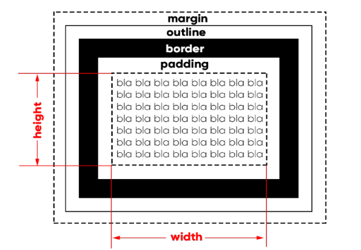

Segundo o conceito "box model" a grande maioria dos elementos HTML são como caixas. Elas são containers que armazenam conteúdos ou até mesmo outras caixas.
Principais elementos da anatomia de uma caixa

content = conteúdo
height = altura
width = largura
padding = preenchimento, borda de dentro
border = borda
outline = contorno
margin = margem, borda de fora
Parágrafos também são exemplos de box-level, mas os links são exemplos de inline-level. Vamos ver como tudo isso funciona?